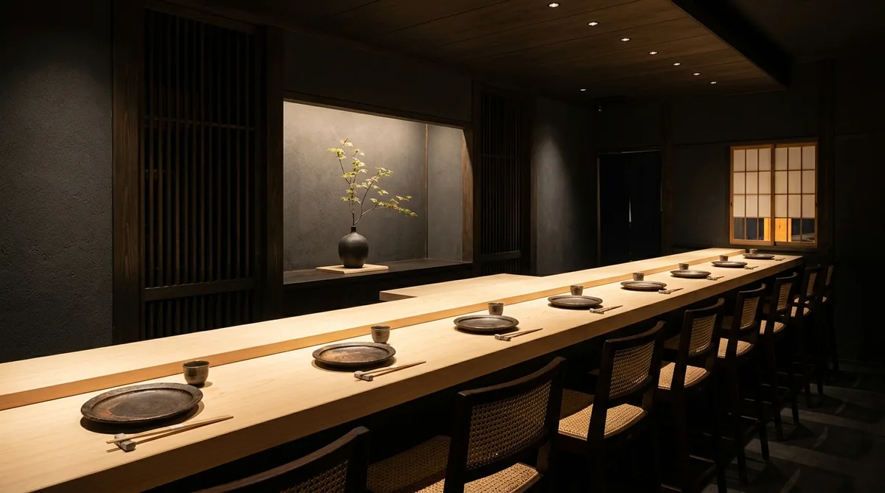
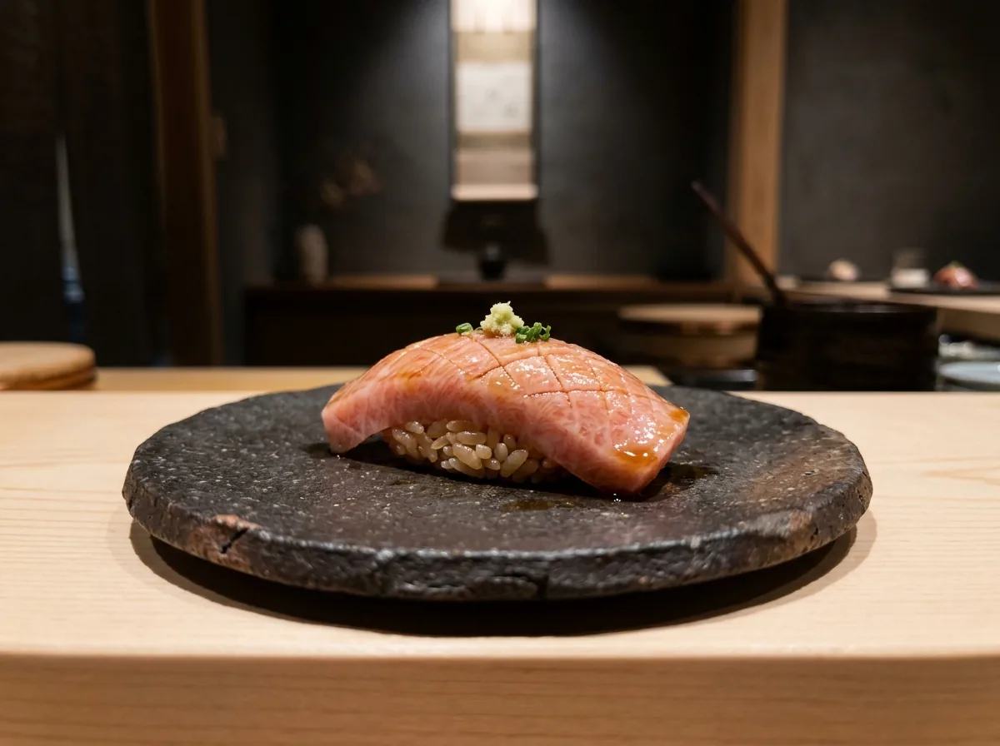

京都祇園・完全予約制
PROLOGUE
祇園南側の石畳を折れた先に佇む、わずか八席の隠れ家。毎朝市場で目利きした近海の魚介と、赤酢で仕立てた温かな舎利、季節の出汁が香る椀物を、一斉スタートのおまかせにてご用意しております。

CRAFT & SAKE
白身魚には昆布締め、本鮪には数日の熟成を施し、旨味が最も開く瞬間の温度で握ります。人肌の赤酢舎利が口の中でほどける瞬間を大切にしております。
合わせるのは京都・北陸の小さな蔵元から届く純米吟醸や燗酒。料理の移ろいに寄り添う一杯を女将がご提案いたします。
INFORMATION